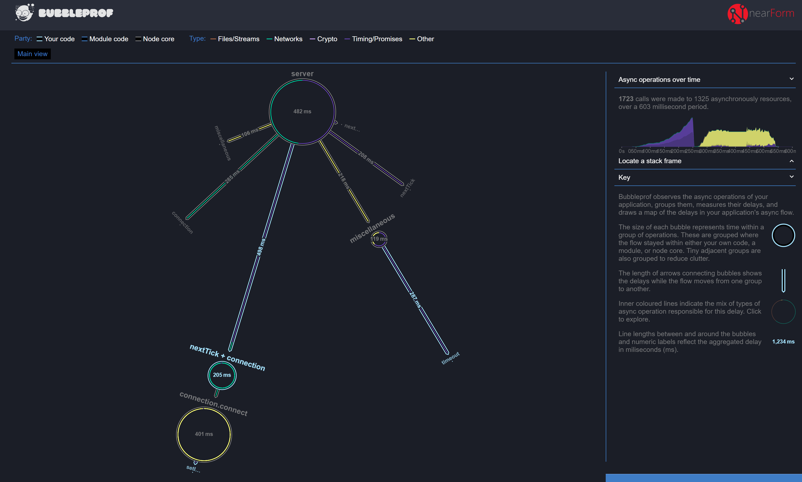

Observing Node.js
@jasnell
What's happening inside?
const EventEmitter = require('events')
async function a(val) { console.log('A', val) }
setImmediate(() => console.log('B'))
const ee = new EventEmitter()
ee.on('foo', async (val) => {
process.nextTick((val) => a(val), val++)
await a(val++)
a(val)
})
new Promise((res) => {
for (let n = 0; n < 1e9; n++) {}
setImmediate(() => console.log('C'))
process.nextTick(() => res('D'))
console.log('E')
}).then(console.log);
queueMicrotask(() => console.log('F'));
(async (res) => {
for (let n = 0; n < 1e6; n++) {}
process.nextTick(() => console.log('G'))
return 'H'
})().then(console.log)
process.nextTick(() => console.log('I'))
const promises = [];
let n = 0;
for (; n < 10; n++)
promises.push(a(n))
setTimeout((val) => ee.emit('foo', val), 1000, n)
console.log('J')
Promise.all(promises)
PromiseEventEmitterasync/awaitprocess.nextTick()setImmediate()setTimeout()queueMicrotask()
Your Challenge:
In what order the statements will be printed?
https://bit.ly/2PwFedP
const EventEmitter = require('events')
async function a(val) { console.log('A', val) }
setImmediate(() => console.log('B'))
const ee = new EventEmitter()
ee.on('foo', async (val) => {
process.nextTick((val) => a(val), val++)
await a(val++)
a(val)
})
new Promise((res) => {
for (let n = 0; n < 1e9; n++) {}
setImmediate(() => console.log('C'))
process.nextTick(() => res('D'))
console.log('E')
}).then(console.log);
queueMicrotask(() => console.log('F'));
(async (res) => {
for (let n = 0; n < 1e6; n++) {}
process.nextTick(() => console.log('G'))
return 'H'
})().then(console.log)
process.nextTick(() => console.log('I'))
const promises = [];
let n = 0;
for (; n < 10; n++)
promises.push(a(n))
setTimeout((val) => ee.emit('foo', val), 1000, n)
console.log('J')
Promise.all(promises)
Four
Critical
Concepts
The Event Loop
The Next Tick Queue
The Microtask Queue
JavaScript
is not
asynchronous.
The event loop
executes only
one task at a time.
When JavaScript is
running
the Event Loop is not
Event
Loop
Delay
const eventEmitter = new EventEmitter()
eventEmitter.on('some-event', () => {
for (let m = 0; m < 1e20; m++) {
// Block everything
}
})
JavaScript
is not
asynchronous.
Trick Question:
Does all JavaScript in
Node.js
run within the event loop?
Trick Question:
Does all JavaScript in
Node.js
run within the same
event loop?
Bootstrap »
Main »
Event Loop
Bootstrap:
Node.js loads it's own JavaScript...
Main:
Node.js loads and executes user code...
Event Loop:
Started after main scope exits...
But only if asynchronous tasks
were scheduled...
// bootstrap.js
const { performance } = require('perf_hooks')
console.log(performance.nodeTiming.loopStart) // === -1
setImmediate(() =>{
console.log(performance.nodeTiming.loopStart) // !== -1
})
$ node bootstrap.js
Why is this important?
const EventEmitter = require('events')
async function a(val) { console.log('A', val) }
setImmediate(() => console.log('B'))
const ee = new EventEmitter()
ee.on('foo', async (val) => {
process.nextTick((val) => a(val), val++)
await a(val++)
a(val)
})
new Promise((res) => {
for (let n = 0; n < 1e9; n++) {}
setImmediate(() => console.log('C'))
process.nextTick(() => res('D'))
console.log('E')
}).then(console.log);
queueMicrotask(() => console.log('F'));
(async (res) => {
for (let n = 0; n < 1e6; n++) {}
process.nextTick(() => console.log('G'))
return 'H'
})().then(console.log)
process.nextTick(() => console.log('I'))
const promises = [];
let n = 0;
for (; n < 10; n++)
promises.push(a(n))
setTimeout((val) => ee.emit('foo', val), 1000, n)
console.log('J')
Promise.all(promises)
First Rule of Node.js
Performance:
Know when your code is running
Trace
Events
Async
Hooks
Bubble
Profiling
Bootstrap
Trace
Events
$ node --trace-event-categories=v8,node.vm,node.bootstrap timing.js
Async
Trace
Events
$ node --trace-event-categories=node.async_hooks timing.js
Clinic.js



https://clinicjs.org
$ npm i -g clinic
// or
$ yarn global add clinic
$ clinic bubble -- node timing.js
https://bit.ly/2Fr2t4J
Trick Question:
Are Promises
Asynchronous?
Trick Question:
Do Promises
execute concurrently?
// Promise.all()
'use strict'
async function foo() {
for (let m = 0; m < 1e9; m++) {}
return 'foo'
}
async function bar() {
for (let m = 0; m < 1e6; m++) {}
return 'bar'
}
async function all() {
return await Promise.all([foo(), bar()])
}
all().then(console.log)
// Promise.race()
'use strict'
async function foo() {
for (let m = 0; m < 1e9; m++) {}
return 'foo'
}
async function bar() {
for (let m = 0; m < 1e6; m++) {}
return 'bar'
}
async function race() {
return await Promise.race([foo(), bar()])
}
race().then(console.log)
'use strict'
const { promisify } = require('util')
const timeout = promisify(setTimeout)
async function foo() {
await timeout(10000)
return 'foo'
}
async function bar() {
await timeout(1000)
return 'bar'
}
async function race() {
return await Promise.race([foo(), bar()])
}
race().then(console.log)
Why is this important?
'use strict'
async function everythingIsFine() {
for (let m = 0; m < 1e9; m++) {}
return 'A'
}
async function doBadThings() {
const tasks = [];
for (let n = 0; n < 10; n++) {
tasks.push(everythingIsFine())
}
return await Promise.all(tasks)
}
doBadThings().then(() => console.log('done!'))
A real world example:
- Poor response times
- Thousands of Promises being created
- JSON.parse/JSON.serialize
- Tight synchronous loops
- Synchronous Promises
- Expensive Logging
https://bit.ly/2OLj3eM
Use Clinic.
clinicjs.org
Let us know what you think.
Thank You.